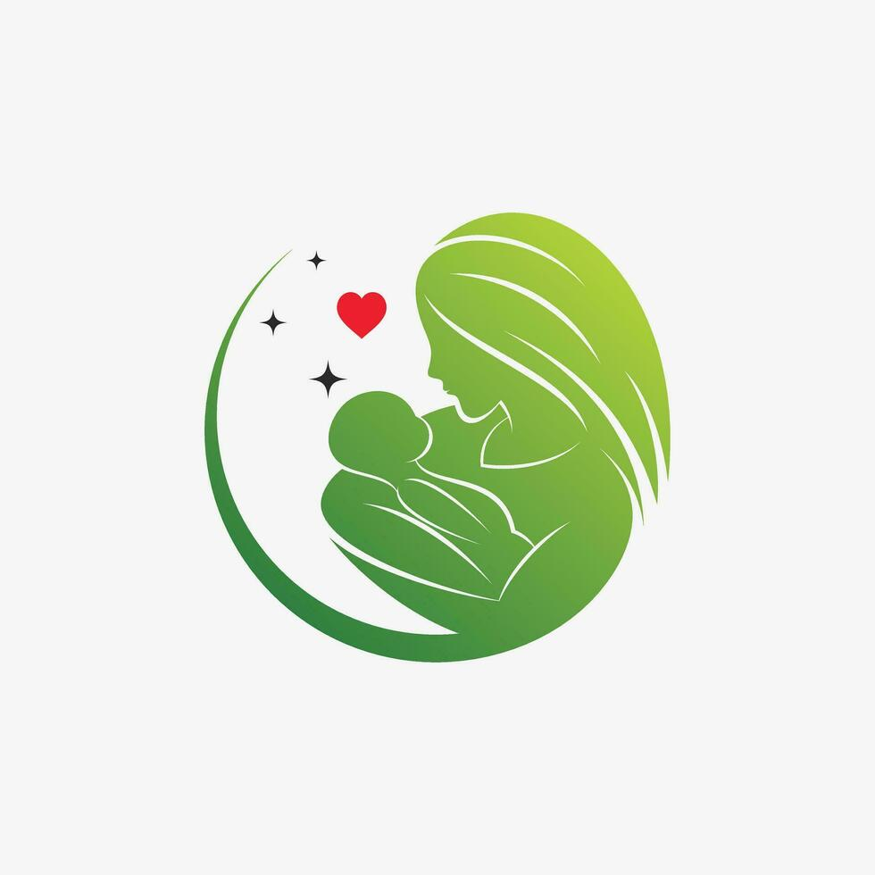
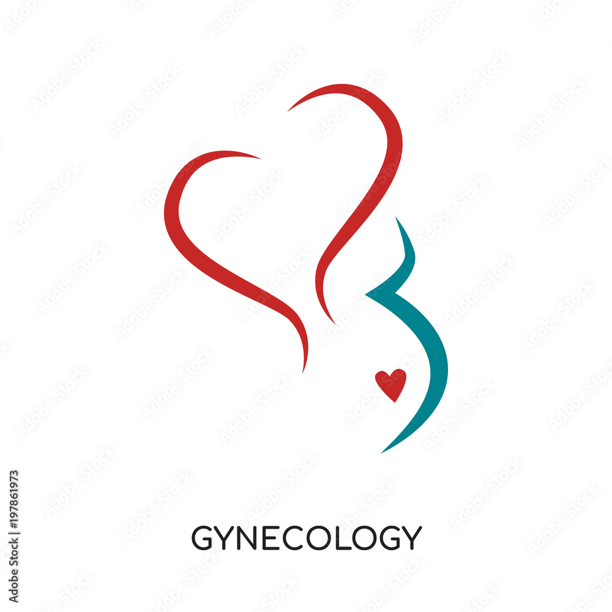
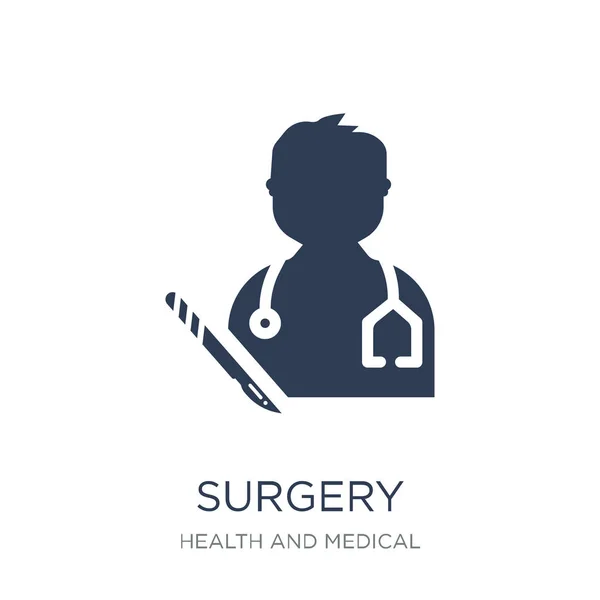
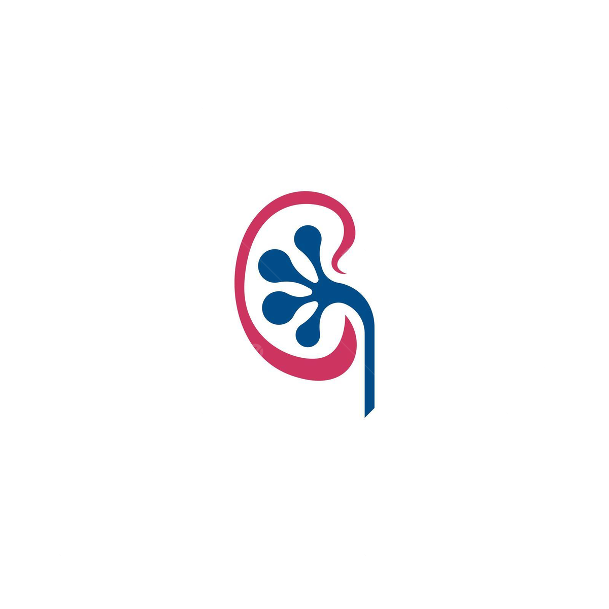

Médecine de spécialité
Découvrez nos domaines d’excellence : Maternité, Gynécologie, Chirurgie et Urologie.

Maternité
Suivi obstétrique, soins prénatals et post‑natals, accompagnement à l’accouchement.

Gynéco‑chirurgie
Dépistage, contraception, prise en charge hormonale et ménopause.

Chirurgie
Interventions mini‑invasives, laparoscopie, soins pré‑ et post‑opératoires.

Urologie
Prostate, santé pelvienne, traitement des calculs rénaux.
Contactez‑nous
- Adresse : 27 chemin Ahmed KARA - Bir Mourad Rais - Alger, Algerie
- Téléphone : +213 770 79 46 30
- Email : sidiyahiaclinique2@gmail.com